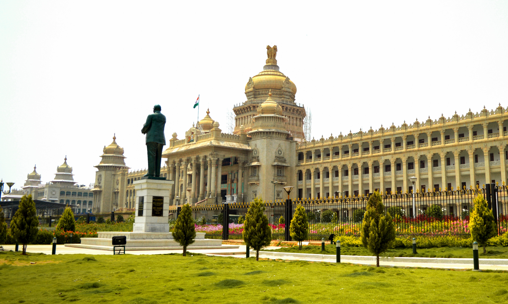
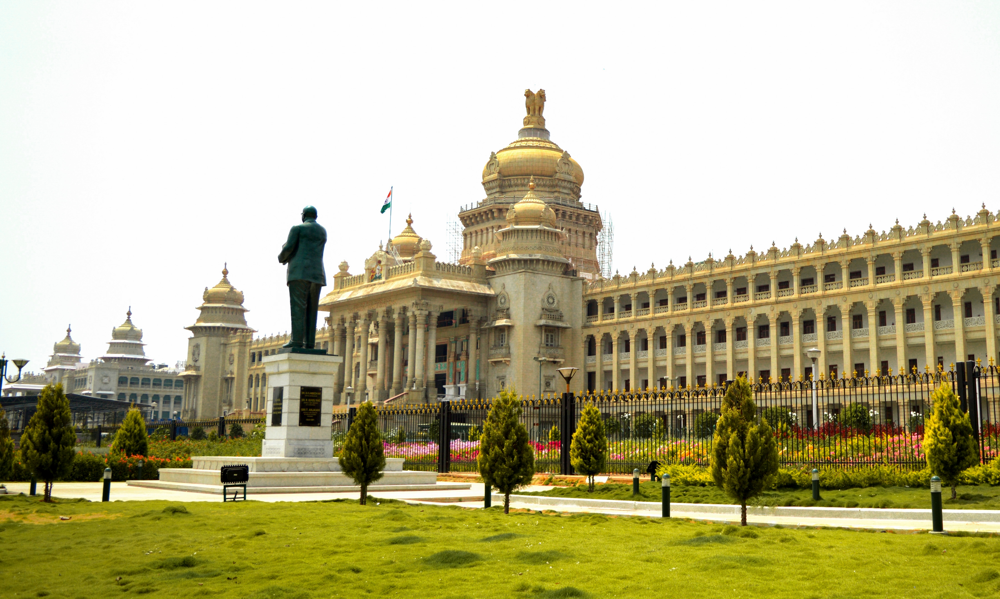

Popular Attractions

Bangalore Palace
Modeled after England's Windsor Castle, Bangalore Palace is a stunning architectural marvel with Tudor-style and Gothic windows. Visitors can explore its opulent interiors, vintage furniture, and exquisite paintings.

Lalbagh Botanical Garden
Spread over 240 acres, Lalbagh is a picturesque botanical garden famous for its lush greenery, colorful flowerbeds, and a diverse collection of plants, including rare species. The Glass House, modeled after London's Crystal Palace, is a major highlight.
 
